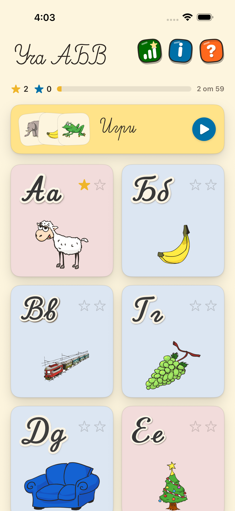
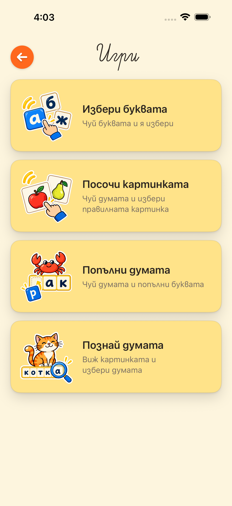
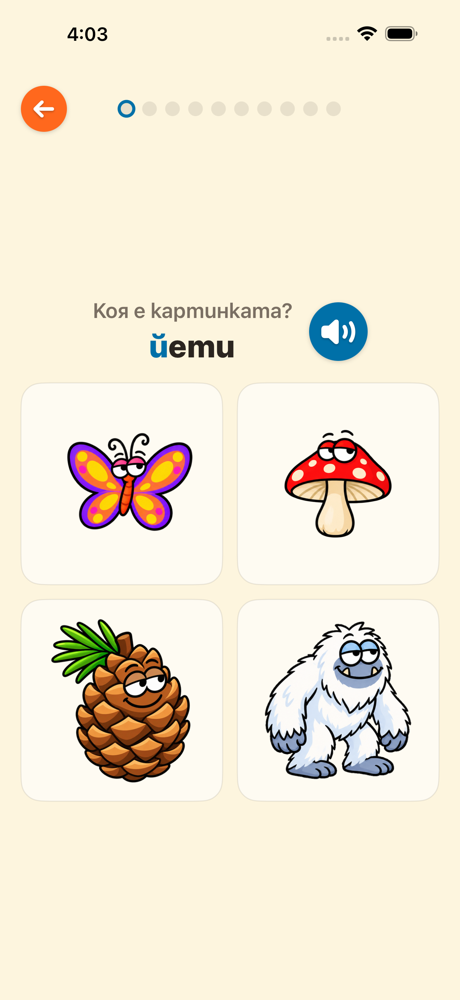
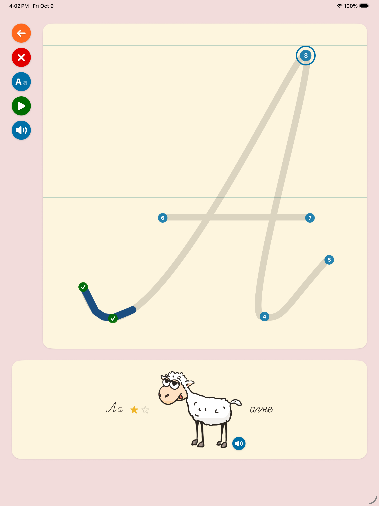

Уча АБВ — Поддръжка
Уча АБВ помага на децата да учат българските букви, да пишат и да разпознават думи. Включва 30 букви в ръкописна форма и четири игри със 115 думи с картинки и гласови записи на български. Работи изцяло офлайн, без реклами и без регистрация.
Връзка с нас
За въпроси, проблеми или предложения пишете на info@narity.com. Отговаряме на български и на английски.
Ако съобщавате за проблем, помогнете ни с: модела на устройството, версията на iOS и на приложението, коя буква или игра сте отворили и какво се е случило.
Какво е новото във версия 2.1?
- Четири игри за букви и думи със 115 картинки.
- Нови гласови записи на български.
- По-ясни указания за писане и повторно гледане на последните опити.
- Обновени екрани, икона и изображения на буквите.
- Подобрения за iPhone и iPad.
Екрани от приложението








Често задавани въпроси
Как се изписва буква?
Детето избира буква от списъка и първо гледа как се изписва. След това я изписва само — с пръст или Apple Pencil. Номерираните точки показват откъде да започне и накъде да продължи, но приложението следи формата на буквата, а не дали детето е минало точно през точките. Важно е линията да следва буквата.
Какво означават звездите?
Всяка буква има по една звезда за главната и за малката форма. Изключение е ь — упражнява се само малката форма и има една звезда. Цветът показва колко точно е изписана съответната форма:
- Празна звезда — формата още няма успешно изписване.
- Синя звезда — добро изписване (Супер).
- Златна звезда — отлично изписване.
Двете звезди са независими и звезда никога не се губи: ако детето изпише буквата по-добре втория път, синята звезда става златна, а по-слабо изписване не отнема вече спечеленото. Общо за азбуката звездите са 59. Звездите в края на игрите показват правилните отговори от първия опит и не се добавят към тези 59 звезди.
Какви игри има и кога се отключват?
- Избери буквата — чуй буквата и я посочи. Отключва се след успешно изписване на две различни малки букви.
- Посочи картинката — чуй думата и избери картинката.
- Попълни думата — добави липсващата първа буква с докосване или влачене.
- Познай думата — избери думата за показаната картинка.
„Попълни думата“ се отключва след спечелване на звезда за три различни букви, с които започват думи от игрите. „Посочи картинката“ и „Познай думата“ изискват четири такива букви. Всяка игра има десет въпроса. Резултатите се запазват в „Напредък“.
Може ли детето да гледа отново своето писане?
„Виж пак“ показва последното изписване на екрана за писане. В „Напредък“ може да гледате отново последните 20 опита, включително неуспешните. Те се пазят и след затваряне на приложението.
Детето изписва буквата, но приложението не я приема
Най-честите причини: изписването е започнало далеч от началото на буквата, линията е излязла извън буквата, или детето е рисувало на едно място, без да продължава напред. При грешка приложението запазва вече правилно изписаните части. Следвайте следващата маркирана точка или гледайте отново показното изписване. Бутонът за изчистване позволява да започнете буквата отначало.
Трябва ли интернет?
Не. Всички букви, звуци и картинки са вградени в приложението. Уча АБВ никога не се свързва с интернет.
Как да изчистя напредъка?
Напредъкът се пази само на устройството. Изтриването на приложението изтрива и целия напредък.
Има ли реклами или покупки?
Няма. Няма реклами, няма покупки в приложението и няма регистрация.
Поверителност
Уча АБВ не събира, не съхранява и не изпраща никакви лични данни. Приложението няма достъп до интернет, не изисква регистрация, не съдържа реклами или аналитика и не иска достъп до камера, микрофон, местоположение, контакти или снимки.
Напредъкът на детето, записаните опити за писане и резултатите от игрите се съхраняват само на устройството. Не се изпращат никъде и не са достъпни за нас. Изтриват се напълно при изтриване на приложението.
Приложението е предназначено за деца на възраст 5–12 години. Тъй като не събираме никакви данни, не събираме данни и от деца.
Общата политика за поверителност на Narity Limited е достъпна на narity.com/privacy.html. Разделите за профили, аналитика и споделяне с трети страни описват други наши приложения и не се отнасят за Уча АБВ, което не събира нищо.
In English
Уча АБВ (Ucha ABV) teaches children aged 5–12 to write Bulgarian letters and recognize words. Version 2.1 includes 30 cursive letters and four learning games with 115 illustrated words and Bulgarian voice recordings. It works entirely offline.
Writing and progress: practice 59 letter forms; ь is taught only in lowercase. Earn blue stars for good writing and gold stars for excellent writing. Replay the latest 20 writing attempts from the progress screen, including unsuccessful attempts.
Games: choose a letter, point to a picture, complete a word, or choose a written word. Letter choice unlocks after earning stars on two lowercase forms. The other games need three or four practiced initials that have picture words.
Support: info@narity.com. When reporting a problem, please include your device model, iOS and app versions, the letter or game you opened, and what happened.
Privacy: the app collects, stores and transmits no personal data. It has no internet access, no account, no advertising, no analytics, and requests no device permissions. Progress, saved writing attempts, and game results stay on the device, are never transmitted, and are deleted with the app. Narity Limited's general privacy policy is at narity.com/privacy.html; its sections on accounts, analytics and third-party sharing describe other apps and do not apply to Уча АБВ.